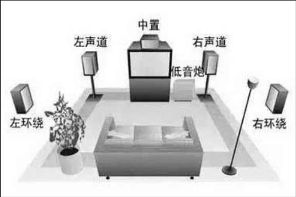
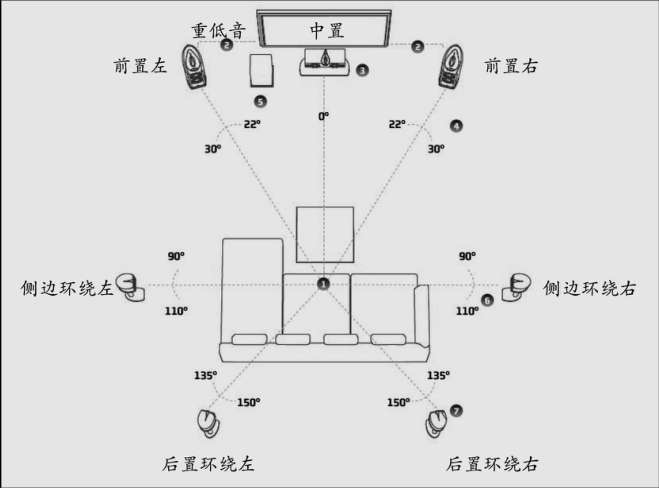

帧率
帧率（Frame Rate）是用于测量显示帧数的量度。所谓的测量单位为每秒显示帧数（frames per second，简称fps）或“赫兹”（Hz）。
每秒显示帧数（fps）或者帧率表示图形处理器处理场时每秒能够更新的次数。高帧率可以得到更流畅、更逼真的动画。一般来说，30fps就是可以接受的，但是将性能提升至60fps则可以明显提升交互感和逼真感，但是超过75fps就不容易察觉有明显的流畅度提升了。
分辨率
视频分辨率是指视频成像产品所形成的图像大小或尺寸。
刷新率
刷新率是指屏幕每秒画面被刷新的次数，刷新率分为垂直刷新率和水平刷新率，一般提到的刷新率通常指垂直刷新率。垂直刷新率表示屏幕上图像每秒重绘多少次，也就是每秒屏幕刷新的次数，以Hz（赫兹）为单位。刷新率越高，图像就越稳定，图像显示就越自然清晰，对眼睛的影响也越小。刷新率越低，图像闪烁和抖动得就越厉害，眼睛疲劳得就越快。 一般来说，如能达到80Hz以上的刷新率，就可以完全消除图像闪烁和抖动感，眼睛也不太容易疲劳。
编码格式
编码的目的是压缩数据量，采用编码算法压缩冗余数据。常用的编码格式有如下这两种。
- MPEG（MPEG-2、MPEG-4）
- H.26X（H.263、H.264/AVC、H.265/HEVC）
封装格式
把编码后的音视频数据以一定格式封装到一个容器，封装格式有MKV、AVI、TS等。
码率
码率也就是比特率，比特率是单位时间播放连续的媒体（如压缩后的音频或视频）的比特数量。比特率越高，带宽消耗得越多。比特（bit）就是二进制里面最小的单位，要么是0，要么是1。
文件大小（b）=码率（b/s）×时长（s）
画质与码率
视频的质量和码率、编码算法都有关系。
并不是码率越大，画质就越好，视频就越流畅
DTS与PTS
- DTS：即Decode Time Stamp，主要用于标示读入内存中的比特流在什么时候开始送入解码器中进行解码。
- PTS：即Presentation Time Stamp，主要用于度量解码后的视频帧什么时候被显示出来。
YUV与RGB
- YUV：也被称作YCrCb，是被欧洲电视系统所采用的一种颜色编码方法（属于PAL），是PAL和SECAM模拟彩色电视制式采用的颜色空间模型。其中的Y、U、V几个字母不是英文单词的首字母，其中Y代表亮度，UV代表色差，U和V是构成颜色的两个分量。
- RGB：是一种颜色空间模型，通过对红（R）、绿（G）、蓝（B）3个颜色通道的变化以及它们相互之间的叠加来得到各式各样的颜色，RGB即代表红、绿、蓝3个通道的颜色。
视频帧及音频帧
视频帧
常见的视频帧有I、P、B帧等
- I帧表示关键帧，你可以理解为这一帧画面的完整保留，解码时只需要本帧数据就可以完成（因为包含完整画面）。
- P帧表示的是这一帧和之前的一个关键帧（或P帧）的差别，解码时需要用之前缓存的画面叠加上本帧定义的差别生成最终画面。（也就是差别帧，P帧没有完整画面数据，只有与前一帧的画面差别的数据。）
- B帧是双向差别帧，也就是B帧记录的是本帧与前后帧的差别（具体比较复杂，有4种情况），换言之，要解码B帧，不仅要取得之前的缓存画面，还要解码之后的画面，通过前后画面数据与本帧数据的叠加取得最终的画面。B帧压缩率高，但是解码时CPU会比较吃力。
音频帧
- 对 PCM（未经编码的音频数据） 来说，它根本就不需要帧的概念，根据采样率和采样精度就可以播放。比如采样率为44.1Hz，采样精度为16位的音频，你可以算出比特率是4410016kb/s，每秒的音频数据是固定的4 410 016/8字节。
- AMR帧比较简单，它规定每20ms的音频是1帧，每一帧音频都是独立的，有可能采用不同的编码算法以及不同的编码参数。
- MP3帧较复杂一些，包含了更多的信息，比如采样率、比特率等各种参数。具体如下：音频数据帧个数由文件大小和帧长决定，每一帧的长度可能不固定，也可能固定，由比特率决定，每一帧又分为帧头和数据实体两部分，帧头记录了MP3的比特率、采样率、版本等信息，每一帧之间相互独立。
量化精度
量化精度表示可以将模拟信号分成多少个等级，量化精度越高，音乐的声压振幅越接近原音乐。量化精度的单位是bit（比特），CD标准的量化精度是16bit，DVD标准的量化精度是24bit。也可理解为一个采样点用多少bit表示（8/16/24/32bit）。
采样率
采样率指每秒音频采样点个数（8000/44100Hz），采样率单位用Hz（赫兹）表示。
声道
声道（Sound Channel）是指声音在录制或播放时在不同空间位置采集或回放的相互独立的音频信号，所以声道数也就是声音录制时的音源数量或回放时相应的扬声器数量。
常见声道有单声道、立体声道、4声道、5.1声道、7.1声道等
- 单声道：设置一个扬声器。
- 立体声道：把单声道一个扬声器扩展为左右对称的两个扬声器。声音在录制过程中被分配到两个独立的声道，从而达到了很好的声音定位效果。这种技术在音乐欣赏中显得尤为有用，听众可以清晰地分辨出各种乐器来自何方，从而使音乐更富想象力，更加接近临场感受。立体声技术广泛应用于自Sound Blaster Pro以后的大量声卡，成为了影响深远的音频标准。
- 4声道：4声道环绕规定了4个发音点，分别是前左、前右、后左、后右，听众则被包围在中间。同时还建议增加一个低音音箱，以加强对低频信号的回放处理（这也就是如今4.1声道音箱系统广泛流行的原因）。就整体效果而言，4声道系统可以为听众带来来自多个不同方向的声音环绕，可以获得身临各种不同环境的听觉感受，给用户以全新的体验。
- 5.1声道：其实5.1声道系统来源于4.1声道系统，将环绕声道一分为二，分为左环
 图1-1 5.1声道构成图 - 7.1声道：7.1声道系统在5.1声道系统的基础上又增加了中左和中右两个发音点。简单来说，就是在听者的周围建立起一套前后相对平衡的声场，增加了后中声场声道，如图1-2所示
 图1-2 7.1声道构成图